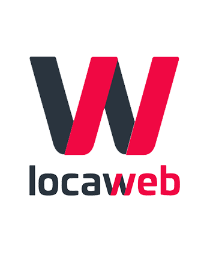

Mobile Developer Intern
Aztlan Technology
Junho/2019 - Agosto/2019
Desenvolvedora Mobile Java, utilizando a IDE Android Studio para o desenvolvimento de aplicações que se conectassem com hardwares IoT através do protocolo MQTT.

Service Desk
SONDA IT
Outubro/2020 - Fevereiro/2022
Responsável por fornecer suporte técnico de Nível 1/2 através de canais de comunicação (telefone e chat), garantindo a resolução eficiente de problemas críticos.
Principais Entregas Resolução de Problemas: Solução de incidentes e requisições relacionadas à infraestrutura de informática e acessos a servidores internos da empresa.

Data Analyst Jr.
Locaweb - LWSA
Fevereiro/2023 - Maio/2025
Analista de Dados Júnior focado em fornecer suporte analítico e insights acionáveis para as equipes operacionais do Grupo LWSA. Minhas atividades são centradas na saúde do cliente e na performance do serviço.
Principais Atividades • Condução da análise e monitoramento de KPIs.
• Análise detalhada do Churn.
• Colaboração ativa e assistência em projetos de infraestrutura e modelagem de dados, trabalhando em conjunto com o Engenheiro de Dados.
Data Engineer I
Bradesco
Junho/2025 - Atual
Atuação no Departamento de Contadoria Geral, focada na modernização e governança do ecossistema de dados financeiros.
Principais Atividades • Desenvolvimento de Pipelines: Construção de fluxos de ETL escaláveis utilizando Python e Databricks.
• Arquitetura de Soluções: Implementação de rotinas em Java, SQL, sempre pensando em escalabilidade e manutenibilidade.
• Business Intelligence: Modelagem de dados para visualização avançada em Power BI e Dashboards Web.